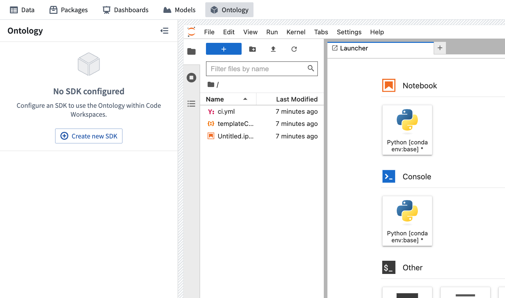
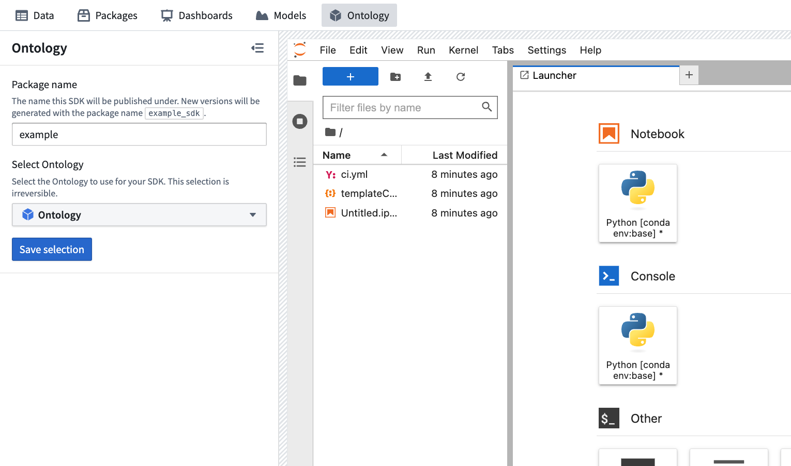
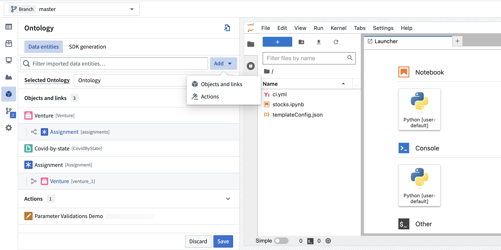
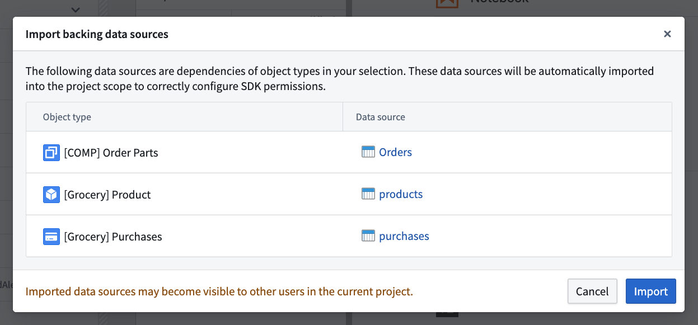
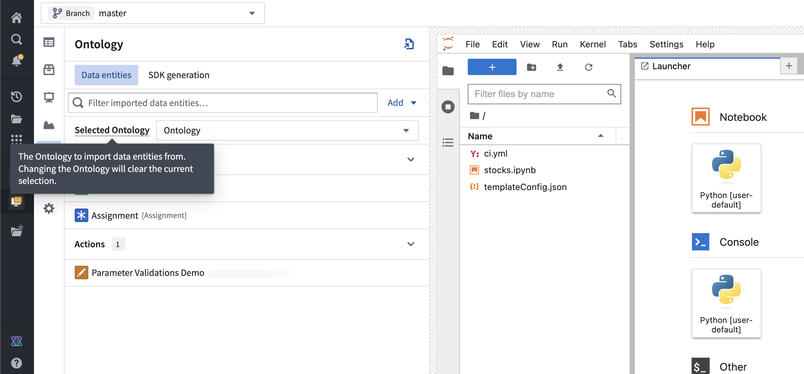
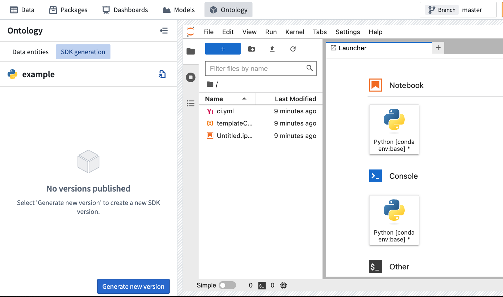
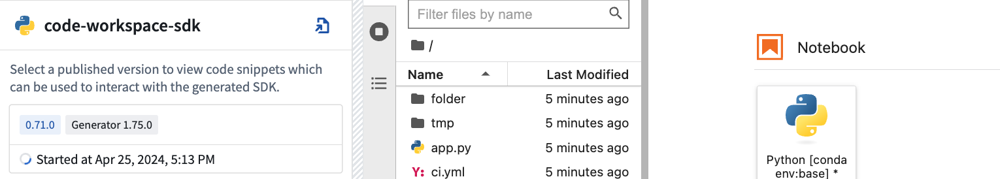
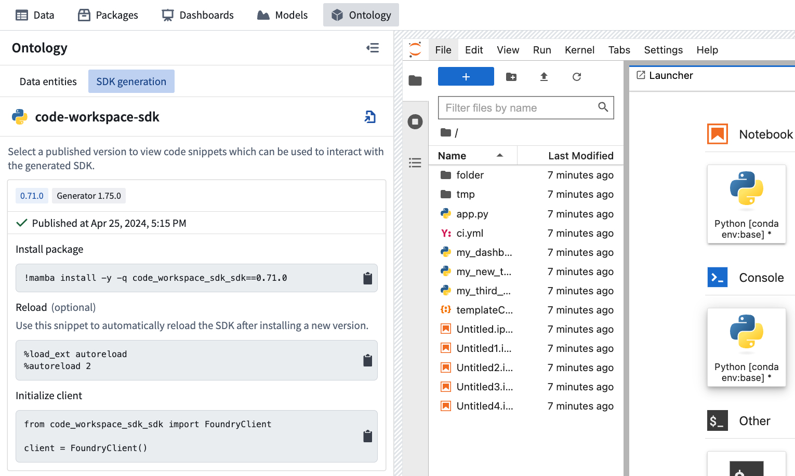

:::callout{theme="warning"} Restricted View-backed Ontology entities and query functions are not yet supported in Code Workspaces. :::
Code Workspaces supports interacting with the Ontology using object, link, and action types in JupyterLab® and RStudio®.
To create a new Ontology SDK in Code Workspaces, first navigate to the Ontology side panel. Each Code Workspace can have one SDK, and multiple versions of each SDK can be created. From the Ontology side panel, select Create new SDK to open the SDK configuration form.

New Ontology SDKs require a package name and an associated Ontology. The package name is used to determine how your SDK is accessed in code: versions of an SDK with a package name of example would be importable under the library name example_sdk. SDK package names can only contain letters, numbers and hyphens, and cannot end with a hyphen. Once published, SDK package names cannot be changed.
After configuring your SDK, select Save selection to continue.

The Ontology side panel contains two tabs: Data entities and SDK generation.
To select data entities, navigate to the Data entities tab. Select Add and choose the desired data entity type to open a resource selector dialog which enables browsing for and selecting data entities. After selecting data entities, your selection can be saved using the Save button at the bottom of the side panel. After selecting Save, a new SDK version will be generated with access to the selected data entities.

When selecting action types that affect object types or have object types as parameters, those object types will also be added to the selection automatically. If any selected object types have backing data sources which have not yet been imported into the project scope of your Code Workspace, you will also be prompted to confirm the automatic import of these data sources.

To import Ontology entities from a different Ontology, use the Ontology selector found in the Data entities tab. After selecting a different Ontology, select Save to apply changes and generate a new version. Changing the selected Ontology will reset the data scope of the SDK, clearing any selected object, action or link types.

Once configured, new Ontology SDK versions can be published using the Generate new version button found at the bottom of the Ontology side panel. Published and pending versions can be inspected through the SDK generation tab.

After selecting Generate new version, the newly created version will be visible in the SDK generation tab. SDK versions are not usable until the status shows as âPublishedâ.
Common reasons for publishing to fail include:

Successfully published versions can be imported and used in code from within your editor. First, click on the card for the version you want to use within the SDK generation tab of the Ontology side panel. This will expand the card with several code snippets tailored to your editorâs language. Clicking on a snippet will add it to the clipboard so that it can be pasted into your editor.
The visible snippets will vary depending on your editorâs language. All supported languages have the âInstall packageâ snippet which is used to install a version of your SDK and the âInitialize clientâ snippet which is used to import the SDK and initialize a Foundry client to interact with the Ontology.

After the Ontology SDK has been successfully published, follow the instructions to install and import the SDK. You can run the following the command:
!mamba install -y -q my_sdk_package
Next, the following code snippet is used to initialize the FoundryClient, which will enable you to start using the Ontology SDK.
from my_sdk_package import FoundryClient
client = FoundryClient()
Any imported object or link type can be selected in the Data entities tab to view usage examples for that specific resource. The following examples are longer, more general examples that demonstrate end-to-end OSDK usage in Code Workspaces.
The following example demonstrates how to interact with the OSDK using Python. This example assumes that the last successfully published version of your SDK includes object type "Aircraft" and action type "ActionMode". The term my_sdk_package in this example should be replaced with the package name of your SDK.
AircraftObject = client.ontology.objects.Aircraft
# Retrieve an object and view properties
my_aircraft = AircraftObject.get(1)
my_aircraft.date_of_manufacture
# Iterate over objects
for aircraft in AircraftObject.take(2):
print(aircraft.current_location)
# Aggregations
AircraftObject.aggregate({"min_id": Aircraft.id.min(),
"max_id": Aircraft.id.max(),
"aircraft_count": Aircraft.count()}).compute()
# Filter
my_a330s = AircraftObject.where((Aircraft.type == "A330") | (Aircraft.id == 160)).take(1)
# Actions: Validate and apply
import datetime
from my_sdk_package.types import ActionMode
action_validation = client.ontology.actions.change_manufacture_date({"mode": ActionMode.VALIDATION_ONLY},
aircraft=1,
date_of_manufacture="2020-05-01")
if action_validation.result == "VALID":
client.ontology.actions.change_manufacture_date(aircraft=1, date_of_manufacture="2023-05-26")
To access time series properties in a workspace, follow the preceding steps to create, publish, and import an Ontology SDK. Then access time series properties and manipulate them with the foundryTS library. This example shows how to retrieve the Denver object from a set of City objects and access its electricity price as a time series:
from my_sdk_package import FoundryClient
from foundryts import TimeSeries
client = FoundryClient()
city_objects = client.ontology.objects.City
denver = city_objects.get("Denver") # This is the object's primary key
denver_electricity_price_tsp = TimeSeries.from_osdk(denver.electricity_price)
# Convert the series into a foundryts node
node = denver_electricity_price_tsp.node()
# Convert the series into a pandas dataframe
df = denver_electricity_price_tsp.to_pandas()
Code Workspaces supports OSDK in R via the reticulate â package, which allows you to call Python from R.
This example demonstrates how to import a Python OSDK version into R and interact with an object type. This example assumes that your SDK includes an object type called "Aircraft". The term my_sdk_package should be replaced with the package name of your SDK.
library(reticulate)
osdk <- import("my_sdk_package")
client <- osdk$FoundryClient()
aircraft_object = client$ontology$objects$Aircraft
# Retrieve 1 object
aircraft_object$take(1L)
# Retrieve object by ID
aircraft_object$get("1")
As R and Python have different default numeric types, the L suffix has to be used within R when a Python API expects an integer. Learn more at the official documentation for reticulate. â
Jupyter®, JupyterLab®, and the Jupyter® logos are trademarks or registered trademarks of NumFOCUS.
RStudio® and Shiny® are trademarks of Positâ¢.
All third-party trademarks (including logos and icons) referenced remain the property of their respective owners. No affiliation or endorsement is implied.